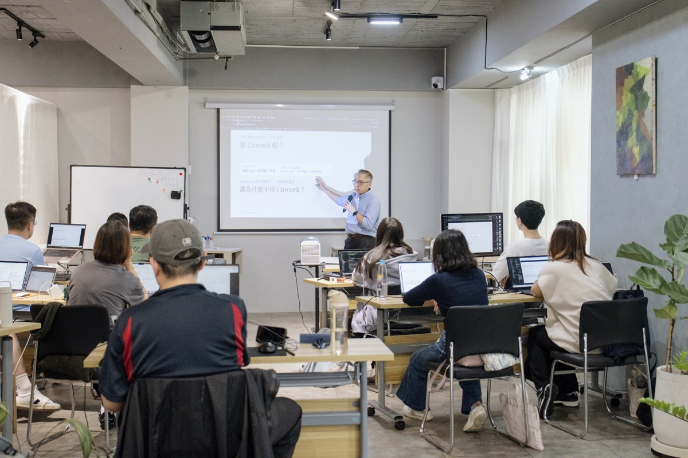
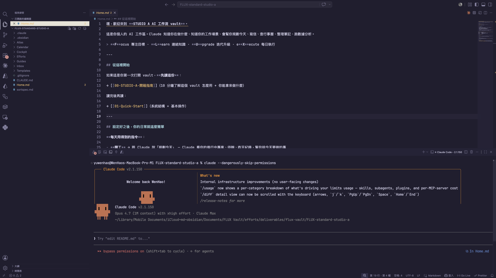

STUDIO A. ／ A 組
DAY 1 / 3業務部 · 門市銷售數據 ＋ 財會
建立我們的
AI 工作系統。
AI 工作系統。
STUDIO A ｜ Day 1 / 3 —— 一個記得你的助手 · 每天的開工收工 · 一條真的在跑的工作流。
講師 余文皓
匯流顧問有限公司
2026 / 08 / 05
STUDIO A · AI 工作流導入 · A 組
BLOCK 0開場
把你最花時間的
那件事 ——交出去。
那件事 ——交出去。
開場 · 26 MIN
2
你們寫的2026 AI 增能需求調查 · Chester／Weber／財會 · 原話
問卷原話攤開 —— 兩端寫的是同一條工作流。
「週報製作 —— 透過 EPB 撈出所需數據並整理至 Excel 表格。」
「時間區間：本週 vs 上週、本月 vs 上月同期、vs 去年同期、今年累積 vs 去年累積。」
「表格透過自訂排序來排名並貼上 keynote。」
「P1：下載每週自動日報後手動加入人流後放入簡報中。」
「P2：年度達成 —— 使用怡如媽減損表 key 入簡報中。」
「最容易出錯 —— 貼錯欄位、公式沒帶到。」
「活動商品新增及刪除遺忘。」
「POS 數字撈取 → 整合門市 by 週／月／去年同期／年度累計對比差異。」
「人工撈 POS 較容易在數字上錯誤。」
「月活動製作 —— 透過 EPB 確認售價、成本、庫存。」
「門市月活動與行銷核對 Excel 總表。」
「教育價的整理 → 編製 XLS → 檢查是否有誤（部份需人工判斷）。」
「整理資料耗時、資訊分散難整理。」
「需要跨部門溝通、重複性整理。」
「希望可以透過 AI 簡化報表製作時間。」
這些都是你們自己寫的 —— 我一個字都沒改。
3
BLOCK 0 · 需求共識
每週 · 現況一條流程 · 兩端
你們兩端在對同一批數字 ——
但表，是分開走的。
但表，是分開走的。
業務端 · 月活動 / 週報 / POS
在 EPB、Excel、
Keynote 之間搬。
Keynote 之間搬。
每週從 EPB 撈數據，整理進 Excel
四種時間區間交叉比對、排序排名
P1 手動加人流、P2 key 入減損表
財會端 · 收表 / 匯整 / 預算
在幾十份 Excel
之間對帳。
之間對帳。
每週從系統撈出一整批 Excel
逐店日報表、一間一間人工比對
收回各區的表，匯整成年度預算
工具不一樣、區間不一樣 —— 但錯的地方一樣：時間區間拉錯、貼錯欄位。而兩端的數字，最後要對得起來。
「貼錯欄位、公式沒帶到。」「人工撈 POS 較容易在數字上錯誤。」 —— 你們問卷裡的原話。
4
BLOCK 0 · HOOK
QUOTE · 01
“
你不是不會做週報、算預算 ——
是時間，都花在搬資料、對數字。
是時間，都花在搬資料、對數字。
5
三天的目標老實說能到哪
這三天做的 —— 不用等 IT、不用發包，自己就能改的那一塊。
A · 三天學會、帶得走
課堂練會 · 回去立刻能用
週報整併 + 解讀（EPB → Excel → 簡報）
四種時間區間自動比對
數據 → 一份分析報告（HTML）
報表 Skill 化（每週重跑）
開工 / 收工工作管理
B · 課堂做出來，你接著長
課堂跑到 80 分 · 剩下你自己長
門市週報表（區 → 總部分層）
財會數據報告自動化
兩端交接的那張表，接起來
C · 這次先不碰
原因不同 · 老實說清楚
客戶個資 / 薪資資料的自動外送
EPB / POS 系統本身的改造
對方系統沒開放的串接
A 帶走會用的能力 · B 課堂做雛形、你接著微調 · C 不誇大、先說清楚
6
BLOCK 0 · 需求共識
我是誰開場前 · 先讓你認識我 · 30 秒
我是余文皓 —— 一條剛好走到你們今天這堂課的路。
5 年
工程師
→
10 年
專案經理
→
3 年
數據分析
→
Minerva · MDA
決策分析碩士
→
第一批
Claude Code 使用者
→
做了
4 個上線產品
→
現在
企業講師 · 公開班
這條路加起來 —— 現在我做企業 AI 顧問＋講師，也開公開班。Claude Code 是我每天在用的 —— 我的產品、我的顧問案，都靠它做出來。
✦
Claude Partner Network
匯流顧問有限公司 · Anthropic 官方夥伴體系



所以
「一堆表，讀成一個判斷」—— 正好是我這幾年在做的事。接下來三天，我們一起做一遍。
7
BLOCK 0 · 我是誰
輪到你30 秒 · 互相認識
開始之前 —— 30 秒，讓我認識你。
01 · 你是誰
名字 · 部門
平常在忙什麼 —— 門市業務 / 數據分析 / 財會…
02 · 用過 AI 嗎
哪些工具？
體驗怎麼樣？
體驗怎麼樣？
ChatGPT · Claude · 其他 —— 還沒真的用過也沒關係。
03 · 現在的程度
給自己打個感覺
新手 · 偶爾用 · 蠻熟 —— 今天是期待，還是有點怕？
今天這班 · 副總 ＋ 業務 ＋ 財會 · 13 位
Felicity（副總）
Chester（北桃竹）
Lion（中南）
Bob
Yuni
Shani
Alston
Myra
Neal
Weber
Abbie
Yiju（財會）
Minnie（財會）
你們要什麼，問卷我都讀過了 —— 但人我還沒認全。換你們，簡單講講自己就好。
8
BLOCK 0 · 互相認識
BLOCK 1AI 工具現況
先看看 ——
現在主流的 AI 工具有哪些。
現在主流的 AI 工具有哪些。
系統認知 · 你的 AI WORKSPACE
9
現在的樣子三家 · 2026 年 8 月
不是只有一個 AI —— 三家都在鋪一整排入口。
OPENAI
你們最可能已經在用的那家
GOOGLE
綁在 Search、Gmail、Chrome 裡
ANTHROPIC · 今天用這家
公司課前幫你們裝好的
在瀏覽器裡聊天
ChatGPT
Gemini
Claude.ai
在終端機 · 跟你的檔一起工作
Codex
Antigravity
Claude Code ★ 今天主角
桌面 agent · 不用寫程式
ChatGPT Work 7 月新的
—
Claude Cowork
在你原本的文件工具裡
—
Gemini in Workspace
Claude in Excel · PowerPoint
給工程師串接
API
AI Studio
API
這半年收掉的：Sora（4/26 關） · Gemini CLI（6/18 關） · ChatGPT Atlas（8/9 關 —— 就這個禮拜天）
工具一直在換今天學的不是某一個 App 的按鈕在哪 —— 是把工作講清楚、交出去。那個不會過期。
10
BLOCK 1 · 三家生態系
你在哪跟它講話越來越多地方
Claude 給你 —— 越來越多地方跟它對話。
Claude API
DEVELOPER · 開發者
工程師串接用、今天不碰。知道有就好。
GA · 2023 / 03
Claude.ai
BROWSER · 瀏覽器
開分頁跟它聊天。跟 ChatGPT 同一類。
GA · 2023 / 07
★ 今天主角
Claude Code
LOCAL · 本機
跟你的檔案在同一空間 —— 能讀、能寫、能跑。
GA · 2025 / 05
Claude Cowork
DESKTOP · 桌面 App
知識工作者的桌面版。跟 Code 像、長相不同。
GA · 2026 / 04
Claude Design
VISUAL · 設計
用對話做簡報、設計稿 —— 之後會用到。
2026 / 04 · 研究預覽
把剛才那一欄放大 —— 同一家、五個入口，差別在你在哪跟它講話。今天我們用最能跟你檔案一起工作的：Claude Code。
11
BLOCK 1 · L1 HOST 平台
WHY CODE第一個分界
為什麼不用 Claude.ai（網頁版）？
在瀏覽器
CLAUDE.AI
✗ 讀不到你電腦的週報表、減損表
✗ 存不了整理好的內容
✗ 只能在分頁裡跟你講話
這是
第一個
分界
第一個
分界
在你電腦上
CLAUDE CODE
✓ 跟你的檔案在同一空間
✓ 能讀、能寫、能跑腳本
✓ 有 CLAUDE.md 記得你是誰
12
BLOCK 1 · WHY CODE
SHAPE那 Cowork 呢 · 兩個差別
那 Cowork 呢？差在兩件事。
COWORK
有形狀
桌面 App · GUI · 預設工作流 —— Anthropic 想好的形狀。
跑在隔離的環境裡 · 跟你的檔案隔一層
vs
CODE
沒形狀
Terminal · 對話框 · 讀寫檔案 —— 裝得進任何形狀。
就跑在你電腦上 · 跟你的檔案同一層
Cowork 有形狀、隔一層。Code 沒形狀、在原地。
13
BLOCK 1 · SHAPE
FITS ANY SHAPE萬用
沒形狀 —— 代表它裝得進你任何一種表。
多份門市銷售表整併→可以
算各店達成率 / 搭售率→可以
標出業績 / WoW 異常→可以
四種時間區間一次比完→可以
逐店日報表交叉核對→可以
月活動毛利額 / 毛利率試算→可以
草擬給門市 / 廠商的信→可以
數據寫成一段解讀→可以
排這週工作行事曆→可以
⋯⋯→都可以
一個工具、你的事都能做。
14
BLOCK 1 · FITS ANY SHAPE
YOUR CODESHAPE
這三天跑完 —— 你電腦上會有一個 Code。
它的形狀、
長得像你的工作。
長得像你的工作。
15
BLOCK 1 · YOUR CODE
YOUR WORKBENCH環境 · 4 個工具
今天的工作環境 —— 四個工具、各司其職。
01
VS Code
工作台
把終端機、檔案、編輯器合在一個視窗。
02
Terminal
對話入口
打一句 claude —— 就開始跟它工作。
03
Markdown
統一格式
純文字 —— 你看得懂、Claude 也讀得懂。
04
Obsidian
工作資料夾的窗
看你的筆記、報告、開工收工紀錄。
16
BLOCK 1 · WORKBENCH
VS CODE今天的工作台
Claude Code 跑在終端機 —— 今天用 VS Code 開。

1
2
3
1
檔案總管
你的工作資料夾攤在這 —— Cockpit / Efforts / Atlas / CLAUDE.md
2
編輯器
看 Claude 改、你自己也改 —— 純文字檔
3
Terminal★ CLAUDE CODE 跑在這
打一句 claude —— 跟它對話的入口
一個視窗 —— 檔案 + 編輯器 + Claude 擺在一起。
17
BLOCK 1 · VS CODE
SETUP一次設定 · 之後不用做
先打開工作資料夾 —— Claude 才認得 FLUX。
1
打開 VS Code
從 Dock 或 Launchpad 開
2
開啟資料夾（兩種都行）
滑鼠：點 開啟資料夾 · 鍵盤：⌘ O
3
選你的 FLUX-standard-studio-a
左側就出現工作資料夾的檔案樹

① 滑鼠派 · 開啟資料夾
② 鍵盤派 · ⌘O
先開工作資料夾Claude 讀「你打開的資料夾」的 CLAUDE.md —— 動手前一定要先開。
18
BLOCK 1 · OPEN YOUR VAULT
HANDS-ON · 它在你電腦裡叫出 Claude、叫它看你的機器
叫出 Claude —— 叫它看看你這台電腦。
先叫出它 · 兩種都行
⌃ ` 打 claude（Terminal）
｜
點側邊 Claude 圖示 或 ⌘ Esc（Chat Panel）
·
同一個 Claude、選你順手的
試試看 · 把這句丟給它
> 我覺得電腦有點慢。幫我看看：記憶體總共多大、現在被哪些程式吃最多、哪些可以安全關掉？順便看硬碟還剩多少、什麼佔最大。
它跑指令前 · 會跳出來問你 —— 按 1
? Claude 想跑唯讀指令看你的系統（top · df）
❯ 1. Yes ← 第一次選 1、看它在做什麼 ★
2. Yes, don't ask again ← 趕時間時用
3. No ← 不想讓它跑
> 我覺得電腦有點慢，幫我看看記憶體…
⏺ 看系統狀態（top · vm_stat · df · du）…
⎿ 記憶體：共 16 GB、已用 13.8 GB（偏高）
⎿ 吃最多：Chrome（38 分頁）2.9 GB · Slack 1.1 GB · 預覽 0.8 GB
⎿ 可關：Chrome 舊分頁 + 沒在用的 Slack ≈ 放掉 3–4 GB
⎿ 硬碟：500 GB 剩 42 GB · Downloads/ 46 GB 最大宗
⏺ 建議：關掉沒用的 Chrome 分頁 + 清 Downloads，會明顯順。
住在你電腦裡它跑了你真實電腦上的指令、看了你的狀態 —— 網頁版 AI 連你開了什麼都不知道。
19
BLOCK 1 · IT LIVES HERE
THE FORMATMARKDOWN · 統一格式
那 Markdown 是什麼？—— 所有檔案的統一格式。
你打的 —— 純文字 + 幾個符號
# 本週
**主要任務**
- W32 週報數據撈取
- 掉幅前三名門市列出來
- 回財會減損表確認信
⌘ ⇧ V
→
渲染
Obsidian 顯示的 —— 漂亮排版
本週
主要任務
• W32 週報數據撈取
• 掉幅前三名門市列出來
• 回財會減損表確認信
• 掉幅前三名門市列出來
• 回財會減損表確認信
AI 看得懂 · 不綁任何工具 · 100 年後還打得開。 同一份 .md，Claude 在 Terminal 寫、你在 Obsidian 看。
20
BLOCK 1 · MARKDOWN
THE LENSOBSIDIAN · 工作資料夾的窗
同一批檔案 —— 在 Obsidian 裡，你看得到全貌、也能到處逛。

Obsidian＝看工作資料夾的窗
免費、跨平台、可離線
資料夾＋筆記＋關聯圖，一眼全貌
你要「看」它，就用這個
Obsidian 裡把這個資料夾叫 vault —— 同一個東西、換個叫法
同一份 .md、兩個視角
Claude 在 Terminal 改、你在 Obsidian 看
中間不轉檔、存檔就同步
21
BLOCK 1 · THE LENS
BLOCK 1讓它記得你
工具都到位了 ——
但它每次開機，都不認得你。
但它每次開機，都不認得你。
CLAUDE.md · 讓 CLAUDE 記得你是誰
22
CLAUDE.mdNO MEMORY
Claude Code 沒有記憶。
?
PROBLEM · 問題
01每次打 claude = 全新對話
02教過的事 · 它不記得
03昨天的設定 · 今天從頭問
是它的設計、不是 bug。
靠什麼解決
↓
✓
SOLUTION · 解法
CLAUDE.md
01每次開機第一件事就讀它
02寫一次 · 它每次都記得
03你的 FLUX Vault 裡 · 已經有一份
Claude Code 的使用說明書。
23
BLOCK 1 · NO MEMORY
CLAUDE.md裡面長這樣
打開 CLAUDE.md —— 就是一份說明書。
CLAUDE.md — FLUX-standard-studioa
# FLUX Vault — AI 指令
你是使用者的個人助手、協助管理 FLUX 系統。
## 你是誰
- 稱呼：Lion
- STUDIO A：業務部 · 門市銷售數據
- 直屬主管：{主管}
## 基本行為
- 用繁體中文回覆（台灣用語）
- 建新檔先讀 Templates/ 範本
## 溝通風格
1. 先給結論、再給理由
2. 最多給 2 個選項
⋯⋯
你是誰
填一次 —— 它記得你的稱呼 / 部門 / 主管
基本行為
講繁中、怎麼建檔 —— 你的規矩
溝通風格
它要怎麼跟你講話 —— 你自己定
CLAUDE.md 管行為。同一招也能管外觀 —— 給它一份設計規範（design system）。今天產報表時就用得到：報告風格一致、像公司做的。
24
BLOCK 1 · CLAUDE.md INSIDE
HANDS-ON ①讓 CLAUDE 認識你
讓 Claude 認識你 —— 一句話的事。
1
打開 Claude Code
⌃ ` 開下方 Terminal、打 claude
2
跟它說（用講的、不用打 Markdown）
把稱呼 · 部門/職位 · 直屬主管講給它聽 —— 照下面那段、填你的資料。
3
看 Claude 跑三件事
(a) 問你要不要改檔 —— 按 1 同意
(b) 把「你是誰」寫進 CLAUDE.md
(c) 之後都用你的脈絡回答
(b) 把「你是誰」寫進 CLAUDE.md
(c) 之後都用你的脈絡回答
> 我叫 {你的稱呼}、STUDIO A {部門/職位}、主管是 {直屬主管}。
請更新 CLAUDE.md。
⏺ Edit(CLAUDE.md)
⎿ 新增「你是誰」欄 …
? Do you want to make this edit to CLAUDE.md?
❯ 1. Yes ← 第一次選 1、看它在做什麼 ★
2. Yes, don't ask again ← 趕時間時用
3. No, tell Claude 改方向
⏺ Edit(CLAUDE.md) ✓
⏺ 好的、我認識你了 ✓
複製這段 · 填你的資料 · 貼進 Claude
> 我叫 {你的稱呼}、STUDIO A {部門／職位}、直屬主管是 {主管}。請更新 CLAUDE.md，並跟我確認你認得我了。
Claude 現在認識你了 —— 之後都會用你的工作脈絡回答你。
25
BLOCK 1 · 認識你
動手時間認識你
換你 —— 3 分鐘讓 Claude 認識你。
認識你 · 更新 CLAUDE.md
03:00
26
HANDS-ON · TIMER
THE REVEALNAMING · THE WORKSPACE
你已經讓它認得你了 ——
而這整套 AI Workspace，我命名為 ——
而這整套 AI Workspace，我命名為 ——
FLUX
給你的工作系統。
FOCUS · LEARN · UPGRADE · EXECUTE
27
BLOCK 1 · THE REVEAL
THREE LAYERS你今天疊哪兩層
底座已經幫你打好 —— 今天你只往上疊兩層。
UPPER · 今天疊
場景
你的工作流
跑開工 · 整理週報數據 · 數據解讀 · 主管報告 ⋯⋯
↑ 疊在它上面 ↑
MIDDLE · 今天疊
原子能力
觸發語 · Skill
「開工」「整理這份門市銷售表」「算各店達成率」「列掉幅異常」⋯⋯
↑ 疊在它上面 ↑
FOUNDATION · ✓ 已就位
底座
FLUX Vault + CLAUDE.md
課前就幫你裝好了 —— 資料夾結構 + 你的 CLAUDE.md
你不用從零搭 —— 底座就位了。今天：講一句話（觸發語）→ 跑一個場景（工作流）。
28
BLOCK 1 · LAYERS
THE LOOP4 LETTERS · 1 CYCLE
一個循環、不是清單。
清單做完就沒了 —— 循環是每天走一圈，把你的助理養得越來越懂你。
F
Focus
專注目標
早上開工、聚焦今天 3 件事
L
Learn
連結知識
把學到的存進 Atlas（D2）
U
Upgrade
迭代升級
調 CLAUDE.md · 包 Skill · 越用越懂你
X
eXecute
每日執行
隔天開工、循環接起來
設目標→累積知識→升級系統→執行↻重新校準
29
BLOCK 1 · THE LOOP
THE FOUNDATIONFLUX 站在什麼上面
FLUX 不是憑空發明 —— 站在三套成熟方法上。
管行動 · PARA

Tiago Forte《打造第二大腦》
事情分成 專案 / 領域 / 資源 / 封存。
Efforts/ · 今天就用
管知識 · 卡片盒

Sönke Ahrens《卡片盒筆記》Zettelkasten
一卡一概念，連結串成知識網。
Atlas/ · D2 深講
管執行 · 12 週年
Brian Moran《12週做完一年工作》
12 週為一期，目標 → 週 → 每天。
Cockpit/ · 今天就用
細節不用背管行動 + 管執行 今天就用到（開工・週報）；管知識 留 D2 深講。
30
BLOCK 1 · THE FOUNDATION
你的工作資料夾你電腦上的樣子 · 7+1
你的 AI 工作環境長這樣 —— 7 個資料夾 + 1 份說明書。
~/FLUX-standard-studioa
FLUX-standard-studioa/
├── CLAUDE.md ★
├── Cockpit/ ★
├── Efforts/ ★
├── Atlas/
├── Inbox/
├── Calendar/
├── Guides/
└── Templates/
Cockpit/
控制中心 ·「開工」「週報」跑這
今天
Efforts/
你的專案 + 領域（PARA）
今天
Atlas/
知識卡 + 來源（卡片盒）
D2
Inbox/
想法快速捕捉、之後再整理
Calendar/
個人日記 + 時間軸
Guides/
操作手冊 · SOP
Templates/
模板 · 已設好初版
CLAUDE.md
助理使用說明書（root 一個檔）
已設
沒有雲端、沒有帳號 —— 就是你電腦上一個資料夾。今天動 Cockpit + Efforts，其他先看過。
31
BLOCK 1 · THE VAULT
你的 FLUX輪到你動手
前面你看過了 ——
現在輪到你的版本。
現在輪到你的版本。
建你的 Area、你的 Project、你本週的清單 ——
然後跑第一次「開工」。
然後跑第一次「開工」。
32
BLOCK 2 · 你的 FLUX
你的 FLUX同一個資料夾 · 這次放大 Efforts
剛剛那個工作資料夾 —— 這次放大看 Efforts。
~/FLUX-standard-studioa
├── Inbox/
├── Cockpit/
├── Efforts/ ◀ 你所有在做的事
│ ├── Areas/ 持續經營
│ ├── Projects/ 有結束日
│ └── OVERVIEW.md
├── Atlas/
├── Calendar/
└── CLAUDE.md
門市經營、月活動、週報、預算 ——
你手上所有的事，都歸 Efforts。
你手上所有的事，都歸 Efforts。
Cockpit 放你的「本週要推進什麼」；Efforts 放事情本身 —— 分成兩種：持續的 Area、有結束日的 Project。
先放大看 Efforts —— 下一頁把 Area 和 Project 分清楚。
33
BLOCK 2 · Efforts 在 Vault
為什麼放進來你的檔案 = 它的燃料
同一個 AI —— 差別在你給了它多少你的東西。
空手問它 · 沒你的資料
「幫我分析這間門市的業績」
↓
只能給你通用的零售分析框架 —— 一堆你早就知道、跟這間店無關的原則。
它不認識你的現場
把現場給它 · 週報數據＋去年同期＋活動檔期
同一句話
↓
直接算出這間店的達成率、抓出搭售異常、照你們的格式列出來。
它拿你的真實資料在做事
不是它變聰明是你給了它「你的現場」——你放進 Efforts 的每份檔案，都是它下次幫你做事的燃料。
CLAUDE.md 給它「你是誰」、Efforts 給它「你在做什麼」——都是 context。重點是放相關、整理好的（所以才分 Area / Project）——不是把整台電腦倒進去。
34
BLOCK 2 · WHY · 給它 context
PARA兩種 Effort · 分清楚
兩種要分清楚 —— 你的 Area、你的 Project。
∞Area
沒結束日 · 你長期負責的職能
01門市業績經營
02週報與數據分析
03月活動規劃與核對
04POS 設定與變價
05跨部門協作（財會／行銷）
沒有結束日 → Area
這件事
有結束日
嗎？
有結束日
嗎？
⚑Project
有結束日 · 做完就結案的成果
018 月開學季活動 （8/31）
02新品上市首週衝刺
03下半年度預算編列 （9/30）
04○○門市改裝重開
05Q3 搭售率提升專案
有結束日（即使很遠）→ Project
不確定的 → 先放 Area，之後隨時能改。等下 Claude 也會幫你分。
35
BLOCK 2 · Area vs Project
換你兩步 · 把工作交給 Claude 整理
換你 —— 兩步，把手上的工作交給 Claude 整理。
1
討論 + 建立結構
講你在忙什麼 → Claude 幫你分 Area / Project、建好資料夾。
2
檔案丟進 Inbox、歸位
把工作檔（週報 Excel、月活動表…）拖進 Inbox → Claude 幫你分進對應 Area / Project、原檔留著。
你只講人話 · Claude 動手
> 我負責門市業績、週報、月活動…
幫我分成 Area / Project
Claude 建好 Efforts/Areas/…
Claude 建好 Efforts/Projects/…
每個放一個 README 骨架
先想 30 秒
你這週手上有哪些事？—— 不用分類、想不清楚也沒關係，等下 Claude 會問你、幫你分。
36
BLOCK 2 · 兩步整理
HANDS-ON ①跟 Claude 討論 + 建立
第一步 —— 跟 Claude 討論 + 建立。
複製這段 · 貼進 Claude · ENTER
> 我想用你整理我的工作。先別急著建、我們先討論 ——
① 根據我的角色，猜我長期負責的事（→ Area）、讓我確認補漏。
② 問我有截止日的專案（→ Project）、deadline 何時。
③ 問我要不要加個人 Area（健康／家庭／學習）—— 想加再加。
歸成 Area + 1-2 個 Project 給我確認 → 同意後建資料夾 + README。
CLAUDE 會這樣陪你跑
猜你的 Area→問專案 + deadline→你確認→建好資料夾
37
BLOCK 2 · HANDS-ON① · 討論 + 建立
TIMER ①討論 + 建立 · ~8 MIN
動手 ~8 分鐘 —— 跟 Claude 討論、建好結構。
討論 + 建立
08:00
Claude 問你 → 提案 Area / Project → 你確認 → 它建好資料夾。
卡住、或它分得怪怪的 —— 舉手，講師逐個巡場。
卡住、或它分得怪怪的 —— 舉手，講師逐個巡場。
38
BLOCK 2 · TIMER①
HANDS-ON ②丟進 Inbox → Claude 歸位
第二步 —— 把工作檔丟進 Inbox，讓 Claude 歸位。
A
把檔案放進 Inbox
把你的工作檔（週報 Excel、月活動表…）拖到 VS Code 側邊欄的 Inbox/ —— 複製一份進來、原檔留著。
Finder 按住 ⌥ 拖進工作資料夾的 Inbox 也行。
B
叫 Claude 歸位
Inbox 就在工作資料夾裡，Claude 直接看得到 —— 貼右邊這段，它幫你分進對應 Area / Project。
複製這段 · 貼進 Claude · ENTER
> 我把幾份工作檔放進 Inbox 了。
讀 Inbox/ 的檔案，看每份像哪個 Area / Project，複製（原檔留 Inbox）到對應資料夾。
不確定的先問我。整理完更新 README、回報複製到哪。
放心
原檔不會動 —— Inbox 裡是複製進來的一份。Claude 不確定的會先問你 · 卡住舉手。
39
BLOCK 2 · HANDS-ON② · 複製 + 整理
TIMER ②丟進 INBOX → 歸位 · ~8 MIN
動手 ~8 分鐘 —— 丟進 Inbox、讓 Claude 歸位。
Inbox → 歸位
08:00
檔案丟進 Inbox → 貼 prompt → Claude 把檔案分進對應 Area / Project。
它放錯、或漏了 —— 舉手。
它放錯、或漏了 —— 舉手。
40
BLOCK 2 · TIMER②
做完了你剛剛建好的
剛剛那幾分鐘 —— 你的 Efforts 長這樣了。
~/FLUX-standard-studioa/Efforts
📂 Areas/ 持續經營
├── 門市業績經營/ 門市清單.xlsx · README
├── 週報與數據分析/
├── 月活動規劃/
└── 健康/ 個人 · 可選
📂 Projects/ 有結束日
└── 8 月開學季活動/ ⚑ 8/31
活動商品表.xlsx · README
你只講了人話 ——
分類、建資料夾、歸檔，都是 Claude 做的。
分類、建資料夾、歸檔，都是 Claude 做的。
Area 是你長期的職能、Project 有 deadline —— 你的檔案各就各位。原檔還在原地，這裡是 Claude 複製整理的一份。
沒建完也沒關係 —— 結構在了，之後隨時叫 Claude 補。
41
BLOCK 2 · 你的 Efforts 長這樣
你的 FLUX同一個資料夾 · 這次放大 Cockpit
Efforts 建好了 —— 再看 Cockpit。
~/FLUX-standard-studioa
├── Inbox/
├── Cockpit/ ◀ 你的控制中心
│ ├── Weekly-Commitment.md 本週 3-5 件
│ └── Daily/ 今天 3 件
├── Efforts/
├── Atlas/
└── CLAUDE.md
Cockpit = 你的「本週」。
這週要推進的 3-5 件寫在這。
這週要推進的 3-5 件寫在這。
做到打勾、沒做到記下為什麼。節奏：每天「開工」執行、週五「結算本週」收尾。（結算稍後教。）
開工、看今天做什麼 —— 都從 Cockpit 開始。等下你親手寫一份本週。
42
BLOCK 2 · Cockpit 在 Vault
HANDS-ON寫本週 Weekly Commitment
接下來 —— 寫本週的 3-5 件事。
複製這段 · 貼進 Claude · ENTER
> 我要排本週的 Weekly Commitment。
你已經知道我的 Area 和 Project 了。
幫我想本週最該推進的 3-5 件：
看哪個 Project deadline 近、哪些 Area 要顧，列出來問我。
我確認後，寫進 Cockpit/Weekly-Commitment.md。
CLAUDE · 看你的 EFFORTS 提案
看你的 Project 和 Area —— 本週我建議這 4 件：
· 8 月開學季活動商品確認 （Project · deadline 近）
· 本週門市銷售彙整分析 （週報 / 數據）
· 掉幅前三名門市追因 （門市業績經營）
· 月活動 POS 變價核對 （月活動規劃）
這樣 OK 嗎？要加要減跟我說 ——
確認我就寫進 Weekly-Commitment.md。
HANDS-ON · 8 MIN · 跟 CLAUDE 對話
01Claude 看你的 Area/Project 提案、你改
023-5 件就好、別貪心
03寫完 → 接著第一次跑「開工」
43
BLOCK 2 · HANDS-ON · Weekly Commitment
TIMER跟 CLAUDE · 8 MIN
動手 8 分鐘 —— 寫你的本週 3-5 件。
Weekly Commitment
08:00
3-5 件就好、別貪心 —— 講 deadline 讓 Claude 排優先序。
寫完接著第一次跑「開工」。
寫完接著第一次跑「開工」。
44
BLOCK 2 · TIMER · Weekly
HANDS-ON跑你的第一次開工
第一次跑 —— 看 Claude 幫你整合今天。
YOU · 一句話
~/FLUX-standard-studioa $ claude
> 開工
就這樣 —— Claude 會自動讀你的工作資料夾。
CLAUDE · 整合你的今天
早安 {你的名字}！今天 8/5 週三。
你的 Areas（5）：
門市業績經營 / 週報與數據分析 / 月活動規劃與核對 / POS 設定與變價 / 跨部門協作
Active Projects（1）：
8 月開學季活動（剩 ~4 週）
本週 Weekly Commitment：
5 件、週四前要交本週門市銷售分析。
📌 今天 3 件事：
1. 整理本週門市銷售彙整報表（3 hr）
2. 開學季活動商品毛利試算（1.5 hr）
3. 掉幅前三名門市清單彙整（1 hr）
要我建立今天的 Daily Note 嗎？
HANDS-ON · 5 MIN · 開工
01講「開工」、Claude 自動讀工作資料夾
02看它怎麼把 Area + 本週 → 今天 3 件事
03數據分析、主管報告 —— 待會 B3 接上
45
BLOCK 2 · HANDS-ON · 跑開工
TIMER跑開工 · 5 MIN
動手 5 分鐘 —— 跑你的「開工」。
開工
05:00
講「開工」、Claude 自動讀工作資料夾。
看它怎麼把 Area + 本週 整合成今天的 3 件事。
看它怎麼把 Area + 本週 整合成今天的 3 件事。
46
BLOCK 2 · TIMER · 開工
CONCEPT收工 · 開工的鏡像
下班前一句話 —— 跟 Claude 收尾今天。
早上 · 開工
> 開工
Claude 問你 ——
「今天要做什麼？」
「今天要做什麼？」
→ Daily Note · planning
下班前 · 收工
> 收工
Claude 問你 ——
「今天做了什麼？」
「今天做了什麼？」
→ Daily Note · review
為什麼現在不練
收工要在「一天結束」才有意義 —— 我們在今天最後（收尾）真實下班那一刻，一起跑一次。
47
BLOCK 2 · CONCEPT · 收工鏡像
CONCEPT週節奏 · 結算本週
每天開工收工 —— 每週五，還有一次 「結算本週」。
① 回顧本週
這週的 3-5 件 ——
哪些做完、哪些沒、為什麼。
哪些做完、哪些沒、為什麼。
② 排下週
下週的 3-5 件 ——
就是你剛剛做過的動作。
就是你剛剛做過的動作。
> 結算本週
週五下班前跟 Claude 說這句 —— 它帶你回顧本週、排下週。
D2 在 8/12
今天到 D2 中間這一週 —— 每天開工收工；週五自己跑一次「結算本週」，週清單才不會斷。8/12 D2 見。
48
BLOCK 2 · 週節奏 · 結算本週
BLOCK 2 · 串接連上你的世界
前面它只讀你電腦裡的檔案 ——
現在讓它連上你的信＋行事曆。
現在讓它連上你的信＋行事曆。
這段先確認它讀得到 —— 你的信、你的行事曆。
Email 課前已裝好；行事曆 這段動手接上。（接進「開工」自動整合，是 D2）
Email 課前已裝好；行事曆 這段動手接上。（接進「開工」自動整合，是 D2）
49
BLOCK 2 · 連上你的世界
整合 · EMAIL課前已裝好 · 讀 + 草擬 · 6 MIN
你的信 —— 讓它讀，還幫你草擬回覆。
活動 ① · 讀
複製 · 貼進 Claude Code · ENTER
> 讀我今天的信，挑出今天需要回的，
一句話說明每封為什麼。
活動 ② · 幫你草擬
複製 · 貼進 Claude Code · ENTER
> 挑最急的那封，幫我草擬回覆 ——
先給我看、我確認再寄，別自己送。
讀 + 草擬
06:00
讀到 + 草擬出 = 成功
Claude 不會自己寄 —— 草稿你看過、改過再送。沒讀到信就舉手。
50
BLOCK 2 · Email · 讀 + 草擬
整合 · 行事曆用 claude.ai 的 Connector 接
行事曆 —— 在 claude.ai 點幾下就接上。
claude.ai›Settings›Connectors
📅
Google Calendar查今明行程 · 抓空檔
＋ Connect
✉
Gmail
← 你的信走 Nusoft、不用這
☁
Google Drive選配 · 之後想接再接
先略過
1
claude.ai → 頭像 → Settings → Connectors
2
找 Google Calendar → ＋ Connect
用你個人的 Google 帳號登入、授權。
3
連一次、兩邊都能用
claude.ai 連好 → 你電腦上的 Claude Code 也自動接上。隨時能在同一個地方關掉。
51
BLOCK 2 · 行事曆 · 怎麼連
HANDS-ON連行事曆 + 試一句 · 6 MIN
換你 —— 讓它查行程，再幫你建一筆。
先在 claude.ai 連好 Google Calendar → 開個新對話（connector 要新對話才看得到）
活動 ① · 查 —— 複製、貼進 claude.ai
> 查我今明的行事曆，這週還有哪些會、哪裡有空檔。
活動 ② · 建 —— 複製、貼進 claude.ai
> 下週三 14:00 建一個「○○門市 業績檢討」行程，1 小時。
查 + 建
06:00
查到 + 建好 = 成功
建的是你自己的行程、沒約別人；它會先問你才建。沒 Google 帳號的先看、其他照做。
52
BLOCK 2 · 行事曆 · 查 + 建
連上了你剛剛證明了什麼
你剛剛證明了 —— 它讀你的信＋行事曆，還幫你動手。
✓ EMAIL · Nusoft
讀信、也幫你草擬回覆
挑出今天要回的、寫好草稿等你確認（不自己寄）。
課前裝好 · 在 Claude Code
✓ 行事曆 · Google Calendar
查行程、也幫你建一筆
查空檔、建你自己的行程（先問你才建）。
claude.ai 連好 · Claude Code 也能用
但「開工」還沒接上這兩個今天它只讀工作資料夾。D2 你會親手改「開工」，把信＋行事曆接進去 —— 一句話自動整合成今天的表。
53
BLOCK 2 · 連上了 · D2 接進開工
休息一下10 分鐘 · 回來接著做
下課
10:00
站起來走一走、喝個水。
回來就進今天的主菜 —— 用你自己帶來的資料，做出一份週報表。
回來就進今天的主菜 —— 用你自己帶來的資料，做出一份週報表。
電腦別關 · VS Code 跟 Claude Code 開著就好
54
BREAK · 下課
BLOCK 3 · 產出你每週最花時間的事
它讀得懂你的世界了 ——
換它幫你做每週最花時間的事。
換它幫你做每週最花時間的事。
接下來不是練習題 —— 是你今天帶來的那份真的資料。
先花幾分鐘把公司的長相裝進去，再把流程攤上牆、收斂出一份共用的規格，把它做出來。
先花幾分鐘把公司的長相裝進去，再把流程攤上牆、收斂出一份共用的規格，把它做出來。
55
BLOCK 3 · 產出
先裝一套幾分鐘的事 · 之後每份產出都用得到
同一份數字 —— 長相決定有沒有人當一回事。
✗ 沒有 DS每個人各做各的
週報表.xlsx
北一區168
中區97
南區120
6505080
本週業績!!
6.5M
Weekly Report
6.5M
✓ 有 DS全組像同一家公司
STUDIO A週報
6.5M
STUDIO A各區
5區
STUDIO A對帳
3處
左邊：又醜、又各做各的右邊：一套 DS，全組像同一家公司出的。跟 Claude 講一次你們的樣子 —— 好看＋一致，變免費的預設。
56
BLOCK 3 · 有無 DS 對比
什麼是 DSdesign system · 一次講清楚
DS —— 你們公司的 「長相說明書」。
把公司的「長相」寫成一份規格檔、給 Claude 讀 —— 就像 CLAUDE.md 記得你是誰，DS 記得你們公司長怎樣。讀一次，之後它產任何報表 / 頁面，都照下面這 5 件事長。
A
logo · 識別
wordmark、標誌怎麼擺
配色
白 · 近黑 · 一點 A 藍
STUDIO A
字型
Noto Sans TC 700 · 無 serif
間距 · 版型
大留白 · 柔圓角
按鈕
元件樣式
卡片 · 表格 · CTA 長相
裝一次
之後叫 Claude 產任何報表 / 頁面 —— 自動長成 STUDIO A 的樣子，不用每次重講。
57
BLOCK 3 · 介紹 DS
裝 DS下載 → 解壓 → 裝成 skill
把 STUDIO A DS 裝成 Claude 的 skill。
1
下載 STUDIO A 設計系統
我先幫你們做了一版 —— 不喜歡，之後可以自己調。
2
貼這句 —— Claude 解壓、裝成 skill
解壓縮、放對位置，它自己搞定 —— 你不用碰資料夾。
複製 · 貼進 Claude Code · ENTER
> 我剛下載了 STUDIO A 的設計系統（Downloads 裡的 zip）。幫我解壓縮，
把裡面的 studioa-design skill 裝進 Claude Code（.claude/skills/）——
不用重寫設計。以後產報告就套這套 STUDIO A 的樣子。裝好跟我說。
裝一次就好
裝好先擺著 —— 等一下你自己做出來的那份，就是靠它長成公司的樣子。D2 做週報表也直接用這個。
58
BLOCK 3 · 裝 DS
現況一條流程 · 兩端都在搬
你們兩端都在做同一件事 —— 把數字搬來搬去。
① 撈
好幾個系統
各撈一批
各撈一批
→
② 清 · 併
排掉退貨
併好幾份
併好幾份
→
③ 算
手拉公式
同期 / 達成 / 差異
同期 / 達成 / 差異
→
④ 交
貼進簡報
或送回對方
或送回對方
→
好幾小時後
才開始「解讀」
才開始「解讀」
②③④
時間全耗在這三段 —— 今天要交出去的就是這三段。 ① 撈是去系統點下載，那段得從源頭解，Claude Code 幫不上。
放大 ②③④ —— 兩端各自的手工作業，錯的地方卻是同一個你們問卷原話
›業務端 從 EPB / POS 撈出所需數據，整理進 Excel、自訂排序排名，再貼上 Keynote斷點 · 跨系統
›業務端 四種時間區間交叉比對：本週 vs 上週、本月 vs 上月同期、vs 去年同期、今年累積 vs 去年累積
›業務端 P1 下載自動日報後手動加人流、P2 用減損表 key 入簡報斷點 · 手動 key
›財會端 每週從系統撈出一整批 Excel —— 要算的東西不同、時間區間也都不一樣，一份一份點斷點 · 撈幾十份
›財會端 每間門市的日報表一間一間人工比對；收回各區的表，再匯整斷點 · 逐張對
›兩端共同 時間區間拉錯，資料就錯；複製貼上，貼錯欄位、公式沒帶到
你們兩端最後要對得起同一批數字 ——但這一路上，機械的那段吃掉了想事情的時間。
59
BLOCK 3 · 痛點
BLOCK 3 · 換你動手先看清楚，再交出去
要交給它做之前 ——
你得先講得出你到底在做什麼。
你得先講得出你到底在做什麼。
今天不是我給你題目 —— 是你們把自己的流程攤開，收斂成一條、
寫清楚要什麼，然後動手。講得出來，它才幫得上。
寫清楚要什麼，然後動手。講得出來，它才幫得上。
打開工作流牆 · 一起畫
60
BLOCK 3 · 轉場 · 先看清楚
今天的目的地同一套資料 · 三個層級
今天要做出來的 —— 三份東西，同一份規格。
各區週報表 × 8
每區一份
8 位區經理各套自己那一區的資料 —— 看門市、看品項。
大區週報表 × 2
Chester · Lion 各一份
各區 roll-up：跨區比較、合併調撥 —— 區的那份，往上加總一層。
全公司週報表 × 1
財會 ＋ 副總
兩個大區再往上一層 —— 但上面多一塊：這份是用哪幾個檔做的。
一條線串起來
門市 → 區 → 大區 → 全公司 —— 同一套資料一路加總上去，所以規格要一起定。
61
BLOCK 3 · 目的 · 三份東西
成品長這樣各區週報表 · 8 位區經理
你今天要做出來的 —— 你那一區的週報表。
左邊這一截，有這四塊
1
它自己讀完寫的判斷
不只是把數字排出來 —— 還會講「你可能沒注意到」的那一句。
2
六個指標一排
營收 · 月達成率 · 毛利率 · 來客／客單價 · 人效（每人時營收） · 庫存週轉風險。
3
近 13 週趨勢 ＋ 去年同期疊圖
你們問卷寫的那四種時間區間 —— 一張圖全看得到，不用比四次。
4
營收佔比 vs 毛利佔比
主機吃掉 54% 營收、只給 19% 毛利；配件用 24% 扛了 49%。
往下還有
各門市排名（達成率／毛利率／客單價／人效／附加率） · 品項：賣得好、快斷貨、毛利厚 · 這週該處理的三件 · 怎麼算的 · 這份表的限制
這是我先做的一版
用的是示範資料。你的資料有什麼，就做得出什麼 —— 今天先跑通第一版，之後再慢慢優化；卡住直接問我。
62
BLOCK 3 · 成品長這樣 · 門市
成品長這樣大區週報表 · Chester / Lion
兩位主管要做出來的 —— 你那個大區的週報表。
同一套規格 —— 今天用你自己的資料跑一遍
1
合計會蓋掉分區
合計持平，攤開是北一掉、北二漲。
2
各區一列排開
同一套規格加總一層，跟區的那份對得起來。
3
跨區才看得到
淡水、南港掉法一樣：合併下單、先調撥。
這是我先做的一版
用的是示範資料。你的資料有什麼，就做得出什麼 —— 今天先跑通第一版，之後再慢慢優化；卡住直接問我。
63
BLOCK 3 · 成品長這樣 · 大區
成品長這樣全公司週報表 · 財會＋副總
再往上一層 —— 全公司的那一份。
跟前面兩份同一個版型 —— 只是最上面多一塊
今天用的就是你們每週在撈的那批檔。
1
這批檔對不對，寫在最上面
撈齊 18／18，但南二區那個檔只到 08/02 —— 所以它 −6.8% 那一列掛了旗標。少一天，掉幅還不能讀。
2
主表就兩列
北桃竹、中南 —— 這兩列跟 Chester、Lion 手上那兩份的合計對得起來（同一批數字、同一套算法）。要看是哪一區，下面 8 區攤開。
往下還有
8 區一起排 · 怎麼算的 · 這份表的限制 —— 含兩個大區人效口徑不同怎麼統一的那一條
這是我先做的一版
用的是示範資料。你的資料有什麼，就做得出什麼 —— 今天先跑通第一版，之後再慢慢優化；卡住直接問我。
64
BLOCK 3 · 成品長這樣 · 財會
BLOCK 3 · 開工前把期待調對
今天，是開始 ——
不是完成。
不是完成。
接下來不到 2 小時。剛剛那三張，是完整模擬資料的樣子 ——
你們手上有什麼資料，第一版就長多大。
今天贏的定義：跑通一條。不用漂亮，不用跟 demo 一樣。
你們手上有什麼資料，第一版就長多大。
今天贏的定義：跑通一條。不用漂亮，不用跟 demo 一樣。
先跑通 · 再長大
65
BLOCK 3 · 心理建設
進板先把自己放上牆
進牆 —— 找到你的名字。
↗ 打開工作流牆（Miro）
密碼 studioa2026 連結也在群組。
找到自己的名字，拖一拖 —— 動得了就好。
貼紙的顏色代表你，今天你貼的每一張都用它。
貼紙的顏色代表你，今天你貼的每一張都用它。
牆有兩面 —— 上面那面是門市／區經理的；財會＋副總往下捲，下面那面是你們的。
進不來舉手
現在就講 —— 等一下是 30 分鐘的上牆時間，卡著就整段沒了。兩人一機也行。
66
BLOCK 3 · 進板 · 簽到
要什麼13 位一起談 · 10 MIN
這份週報表 —— 要看什麼，你們說了算。
1
demo 上有的 —— 要／不要／要改
對著剛剛那三張成品講，一塊一句話。
2
demo 上沒有的 —— 直接提
你一直想看、demo 沒做的，現在講。
3
邊談邊分兩堆
一項一張，貼進牆上 ③ 欄兩個框：藍框 ＝ 今天有機會（資料應該有）／灰框 ＝ 之後再加。主管拍板。
一起談、貼各自的牆 —— 財會＋副總貼下面那面的 ③ 欄。三層對不對得起來，等一下規格分享那頁一起對。
分堆用直覺就好
下一步會逐項驗「檔案有沒有」—— 分錯堆的，等一下自然會被抓回來。
67
BLOCK 3 · 要什麼 · 指標討論
對接現實指標 × 檔案 · 15 MIN
「今天有機會」那堆 —— 逐項驗檔。
1
一次一個指標 —— 要用到哪些檔？
把它需要的輸入檔寫進 ① 欄：有卡的確認、沒卡的開一張。檔不在手上 → 把那張指標卡從藍框搬到旁邊的灰框（之後再加），並在卡上補兩行：找誰要 · 誰去要。
2
中間要做什麼？貼 ② 欄
從檔到指標之間的加工：排掉什麼（退貨／調撥／測試單）、併哪幾份、算什麼 —— 一步一張。這欄的工作，就是交給 Claude 的工作。
3
怎麼算才算對，現在講好
調撥算不算業績？退貨扣哪一天的帳？目標用哪一版？—— ② 欄那張口徑卡上有幾個例子，有相關的講好、答案直接寫在卡上。
財會＋副總：同樣三步，全部做在下面那面牆 —— ① 欄是你們自己的檔（各店日報 · ERP 那 65 個）、② 欄多一步「一間一間比對」。
對不上的最值錢
想看而給不出的 —— 就是回去要的清單，這串帶回去最值錢。
68
BLOCK 3 · 今天做得到什麼
上牆工作30 分鐘 · 時間到就分享
牆上見
30:00
指標貼 ③ 欄兩框 · 檔案寫 ① 欄 · 加工與口徑寫 ② 欄 · 版面照 ④ 欄 demo
時間到 —— Claude Code 開動之前，先說明你們的規格。
時間到 —— Claude Code 開動之前，先說明你們的規格。
卡住舉手 · 我在牆邊
69
BLOCK 3 · 上牆計時
上牆 30 分鐘時間到 · 三方把規格對一次
Claude Code 開動之前 —— 三方要有共識。
這三層的表要能一路加上去 —— 所以指標必須三層一樣。現在一人一句，對不上的當場講定。
1 · 區經理 推一位
我這一區
要看什麼
要看什麼
哪些指標進「今天做」、為什麼 · 哪些檔有、哪些要先排掉先併 · 缺的找誰要
2 · 大區主管 Chester · Lion
八個區
疊得起來嗎
疊得起來嗎
我要把八份加成一份 —— 欄名一樣、算法一樣。有人自己多加、有人少一欄，我就得回頭一個一個問。
3 · 財會 ＋ 副總
到我這裡
還對得上嗎
還對得上嗎
我的來源就是你們的日報 —— 同一個欄位、兩邊定義不一樣，到我這裡就對不起來。今天兩邊都在，當場講定：
週別怎麼寫 · 含稅還是未稅 · 退貨認哪一天 · 欄名一個字別改
對不上的，現在寫進 ② 欄口徑卡
指標三層一樣（不然加不起來）；切法各層不同 —— 看你自己那份 demo。現在不講定，下週還是各做各的。
70
BLOCK 3 · 規格分享
開工開資料夾 · 把檔放進去 · 5 MIN
先開一個資料夾 —— 把今天要用的全放進去。
貼上、ENTER —— 資料夾它來開
> 幫我在 Efforts 開一個 Project 資料夾「[你的區]_週報表」，
把我 Downloads 裡那包「週報表_起始包」開頭的 zip 移進這個資料夾、再解壓縮，然後把 zip 刪掉。
做完跟我說：建在哪、裡面有什麼。
1
資料夾它來開 —— 左邊側邊欄就看得到
Efforts/ 底下多一個你的資料夾，裡面兩個檔：demo_週報表.html ＋ 週報表_計算規則.md。不用去 Finder 找。
2
把你今天帶來的檔案 —— 拖進側邊欄那個資料夾
跟早上放 Inbox/ 一樣的動作；拖進去是複製，原檔留在原地。牆上 ① 欄清單有的，就是要拖的那些 —— 原始檔就好，不用先整理。
3
點開資料夾看一眼
裡面有的，就是它看得到的全部。
第一步 —— 先下載你的那一包
↓
區經理 · 8 位週報表_起始包_區.zip
↓
大區主管 · Chester / Lion週報表_起始包_大區.zip
↓
財會 ＋ 副總 · 3 位週報表_起始包_財會.zip
三包裡面都是同樣兩個檔：demo 報表（做出來要長這樣）＋ 計算規則 —— 只有 demo 不同。
財會／副總：資料夾名稱寫「全公司_週報表」。
財會／副總：資料夾名稱寫「全公司_週報表」。
沒拖進去的，
它不知道存在。
它不知道存在。
它能用什麼 —— 是你決定的。
分工很清楚
它知道位置的（Downloads 那包 zip）它自己解、自己搬；只有你知道在哪的，你自己拖進去。
71
BLOCK 3 · 開資料夾
講規格一次講完 · 先別動手 · 10 MIN
規格一次講完 —— 但先不要動手。
不用填空 —— 直接複製、貼上、ENTER
> 我要做一份我這一區的每週報表 —— 做出來要像資料夾裡那份「demo_週報表.html」（示範資料，不是我的數字）。表怎麼整理、數字怎麼算，照資料夾裡那份「週報表_計算規則.md」。
我要的指標看我貼給你的這張圖：藍框「今天有機會」裡的每一個就是這一版要做的；灰框「之後再加」的先不做。中間那一欄是計算規則和加工步驟。
先不要動手。先把資料夾裡我的檔讀過，告訴我：① 哪些指標現在做得出來 ② 哪些缺資料、缺什麼 ③ 每個指標你打算怎麼算（用哪個檔、怎麼算的） ④ 哪裡我講得不清楚。
不清楚的地方不要自己猜 —— 直接問我，我們談完再開始。
大區主管：把「我這一區」換成「我這個大區」。 財會／副總：換成「全公司」—— 你的 demo 就是全公司那一份。
牆上那些「今天有機會」是你們猜的；這一步是它真的讀完你的檔告訴你的 —— 被打回票很正常，那就是今天要弄清楚的事。
貼之前 —— 只要準備兩樣
1
資料夾裡的檔
上一頁已經拖進去了。
2
一張牆的照片 —— 貼進 Claude Code
⌘⌃⇧4 框住牆的 ② ③ 兩欄（直接進剪貼簿）→ 回 Claude Code ⌘V 貼上，再貼左邊那段話。
貼不上就 ⌘⇧4 存桌面，把圖拖進終端機 —— 一樣讀得到。
為什麼要寫「不要自己猜」
它遇到含糊會自己補一個假設往下做 —— 而那個假設不會出現在畫面上，等數字錯了才發現。
它遇到含糊會自己補一個假設往下做 —— 而那個假設不會出現在畫面上，等數字錯了才發現。
先當顧問、再當工人
圖上寫多細，它就做多細 —— 沒寫清楚的，它會自己補一個。最後兩段就是讓它先把做不到的講出來、含糊的回頭問你，不會悶著頭做。
72
BLOCK 3 · 講規格
第一版先做表 · 不做 HTML · 7 MIN
有共識了 —— 照規格，先把表做出來。
討論完、確定做得出來 —— 再貼這句
> 可以，就照資料夾裡那份「週報表_計算規則.md」，把等一下報表要用的數字先算好、存成表格檔（CSV）—— 這幾個檔就是報表的資料來源。
報表（HTML）本身先不要做，等一下再說。
做完跟我說：你產出了哪幾個檔、每個檔一列代表什麼。
跑完 · 抽幾位唸一下
你產出了哪幾個檔？
這幾個檔，就是報表的底層資料。
之後如果要大家一起用 —— 這些欄位就必須有規則。
一次做一件
跑不出來、或數字看起來怪 —— 直接跟它說，它會自己回頭修。
73
BLOCK 3 · 照規格產表
收尾做成一頁報表 · 8 MIN
最後一步 —— 照 demo 做成一頁 HTML。
表跑完了 —— 再貼這句
> 照資料夾裡那份「demo_週報表.html」的格式，做成一頁 HTML。
數字都從剛才那幾個表格檔來，不要回頭重算原始檔。
出來不滿意，直接跟它說哪裡要改 —— 顏色、排版、想多看什麼，講一句它就改。
兩件先講在前面
「不要重算」這句要留著 —— 它讓報表和你剛做的表用同一份數字。不寫，它可能繞過那幾張表、直接從原始檔再算一次；多半算得出來，但只要有一處取捨不同就對不起來，而你不會發現。
趨勢圖看你的檔 —— 原始檔裡如果有前幾週的資料，今天就做得出來；只有這一週的話，下週再跑一次就多一列。
今天帶走的
一個資料夾、一份計算規則、幾個表格檔、一頁報表。
74
BLOCK 3 · 做成 HTML
換你動手30 分鐘 · 做出你自己那一份
你的報表
30:00
剛才那四步 —— 現在用你自己的檔，從頭跑完一遍。
開資料夾 · 講規格（先別動手）· 照規則出表 · 做成 HTML
出來不滿意，直接跟它說哪裡要改 —— 顏色、排版、想多看什麼，講一句它就改。
開資料夾 · 講規格（先別動手）· 照規則出表 · 做成 HTML
出來不滿意，直接跟它說哪裡要改 —— 顏色、排版、想多看什麼，講一句它就改。
卡住舉手 · 我在桌邊 ｜ 先做完的：加一個指標、或多跑一週，看它會不會壞
75
BLOCK 3 · 換你自己的資料
分享一層一位 · 區 / 大區 / 全公司
三層各一位 —— 三份擺在一起看。
一層抽一位
區週報表
？
大區週報表
？
全公司週報表
？
一人一輪，講這三個 ——
01 平常怎麼弄 · 今天呢
這份你平常怎麼做、大概花多久？今天從貼第一句到跑出來呢？
02 哪些做出來了、哪些還不行
還不行的，缺的是什麼？—— 資料在、但要先整理（自己能解）／ 根本拿不到（要去跟誰要 · 誰去要）
03 接下去，你要怎麼優化
你會想讓它再往前一步變成什麼？—— 想到什麼講什麼，不用侷限在這份報表上。
76
BLOCK 3 · 分享
對下週三份看完了 · 15 MIN
三份都做出來了 ——
那下週怎麼對得起來？
那下週怎麼對得起來？
02 · 今天要不到的
哪些檔要去要
灰框「之後再加」那些卡上，已經寫了找誰要 · 誰去要 —— 現在補一個什麼時候。
15:00
散會前拍一張牆 —— 下週就照它跑
77
BLOCK 3 · 對下週
BLOCK 3 · 收束動手告一段落
你剛才練的 ——
不是一份報表，是一套做法。
不是一份報表，是一套做法。
一堆原始檔 → 講清楚要什麼 → 整理成表 → 交得出去的成品。
那你手上還有哪些，是同樣的形狀？
78
BLOCK 3 · 轉場 · 動手告一段落
RECAP今天帶走的
一天下來 —— 4 件帶得走的。
01 · CLAUDE.md + 工作資料夾
Claude 認得你了 ——
工作也有了結構。
工作也有了結構。
你是誰 · Area / Project 都就位
02 · 開工 / 收工
每天一句話 ——
幫你起跑、幫你收尾。
幫你起跑、幫你收尾。
Cockpit · 本週 3-5 件
03 · 連上你的世界
信 + 行事曆 ——
它讀得到、還幫你動手。
它讀得到、還幫你動手。
Email 草擬 · Calendar 建一筆
04 · 你自己的那條，跑通了
用你真的在跑的資料 ——
做出一個帶得走的成品。
做出一個帶得走的成品。
工作流牆 → 規格 → 週報表／分析報告
全裝進你的工作資料夾了不是聽過就忘 —— 明天起，就是你自己跑。
79
收尾 · RECAP · 今天帶走的
HOMEWORK8/12 D2 前完成
D2 之前這一週 —— 3 件作業。
01 · 搬進工作資料夾
~1-2 HR
把你每週真的在用的檔，搬進 Area ＋ Project（Active） —— 週報底稿、目標表、排班表、品項主檔、活動表⋯
→ 它才看得懂你整份工作
02 · 做完 ＋ 談定
~30 MIN ＋ 談一次
自己那份補完整 —— 輸入的檔補齊、要看的指標補上（灰框那些），讓它自己想從輸入到輸出怎麼走；不清楚的叫它問你，別讓它猜。
牆上那幾張去談定 —— 你貼在「要對齊的事」的，找對方約一次、談出結論。
→ 下週跑得動、也對得起來
03 · 每天的節奏
每天 · 到 8/12
開工 跟 Claude 定今天要做什麼；收工 它把進度寫進 Daily Note。
週五下班前跟它說 「結算本週」 —— 回顧這週、排下週。
週五下班前跟它說 「結算本週」 —— 回顧這週、排下週。
→ 週清單才不會斷
80
收尾 · HOMEWORK · D2 前
收工 · 5 MIN今天真的跑一次
下班前 —— 真的跑一次「收工」。
YOU · 一個詞
~/FLUX-standard-studioa $ claude
> 收工
就這樣 —— Claude 會問你今天做了什麼。
跟 Claude 講今天這 3 件
01今天我學到 ——
02我的 insight 是 ——
03下週回去要試的第一件 ——
真實收工
05:00
收工 = 開工的鏡像
Claude 把今天寫進 Daily Note —— 這就是你每天下班的樣子。
81
收尾 · EOD · 真實收工
END · D1下課
明天起 ——
Claude 在你的工作裡。
Claude 在你的工作裡。
余文皓 · D1 END
8/12 D2 見 —— 記得完成作業。
82
收尾 · END · D1 下課